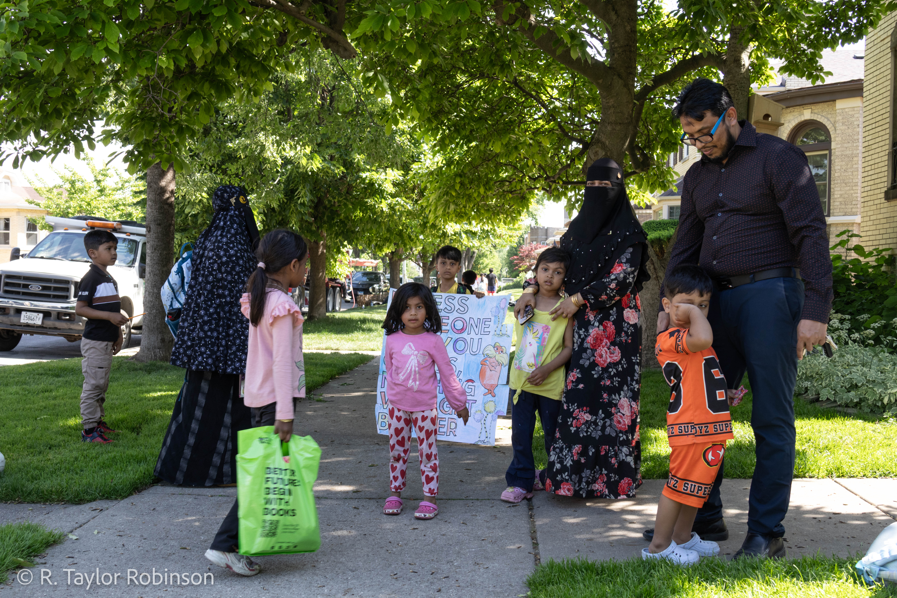
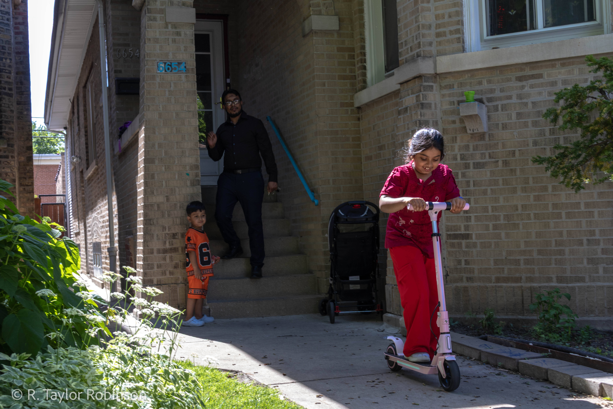
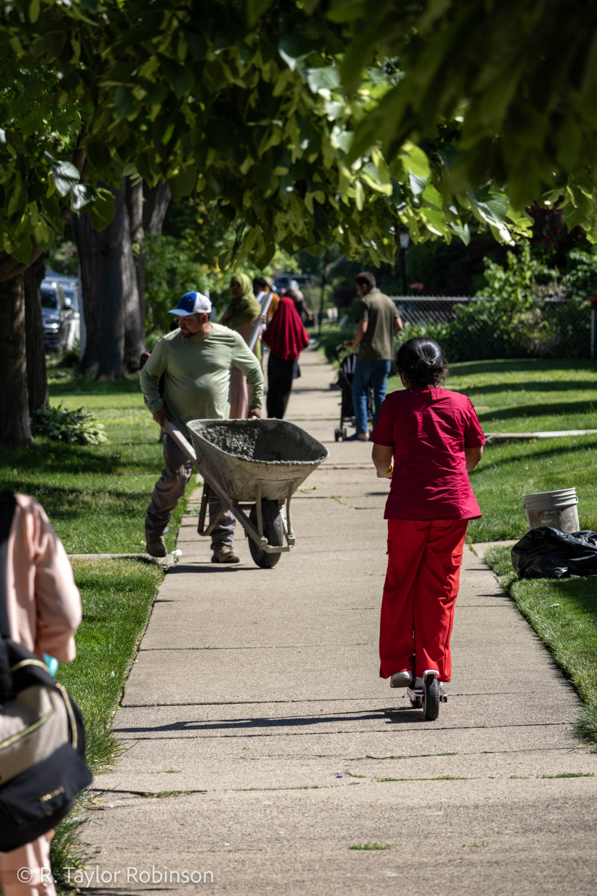
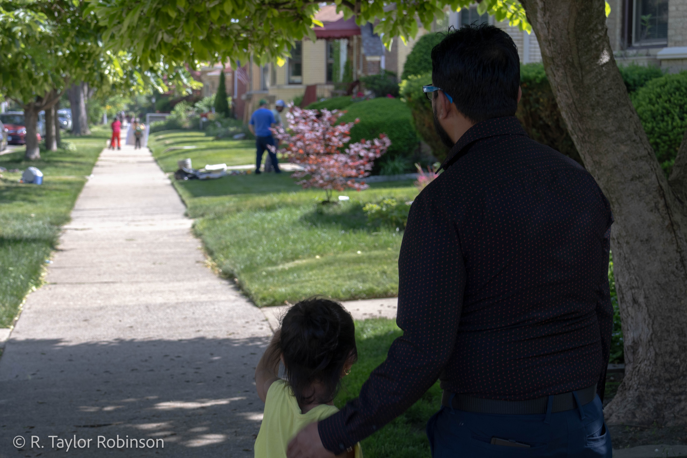

Mustapha Kamal
Mustapha Kamal fled persecution in Myanmar and now helps refugees in Chicago the same way he had been helped when he arrived.
![Mustapha Kamal talks on the phone at his desk at the Islamic Circle of North America, a non-profit and food pantry in Rogers Park that provides social services to refugees and immigrants. Kamal is a case worker and the director and only staff member of the resettlement agency for the Chicago chapter. "19 families have already settled in last three, four months," he said. He said he helps with "finding an apartment for them, helping them find any job, go to airport and pick them up, providing the food, connect to the resources, taking to the doctor office for refugees."](assets/images/photography/mustapha-kamal/1.jpg)
![Kamal stands in the food pantry, where he initially started working when he first joined ICNA. Kamal originally comes from Myanmar and is Rohingya, a persecuted minority ethnic group in the country, when he was 17 he saw his family killed and siblings burned alive along with 4,000 houses in his neighborhood. "I was studying (by) myself. I'm reading the book in the dining room, and my dad was screaming," Kamal said. "I went in there, by the time I go there my dad got shot … My mom is screaming, 'go away, go away, go away.’ My mom doesn't let me go inside, and then when I escape, my mom also got shot."](assets/images/photography/mustapha-kamal/2.jpg)

![Kamal sits on his couch in front of the elaborate display of brightly colored flowers and purple curtains, decorations that, according to him, his wife brings home seemingly every time she goes out of the house. After two years in Bangladesh he decided he needed to leave and make money for his family so he got on a boat along with 90 other passengers headed illegally to Malaysia, where he had been promised higher wages by his friend. "Somehow the captain, he lost the way," he said. "And then we were floating in the sea for 27 days, and without food and water. Out of 91, almost 31 people dead."](assets/images/photography/mustapha-kamal/4.jpg)
![Kamal shows off his at-home gym in his basement, he said he only pays $1,400 a month for his mortgage on the three story home, which is conveniently located only a few blocks from ICNA and across the street from his kids’ school. He said school in Myanmar costs money, there are no free public schools and his father had to save up and sell cattle to make sure Kamal was able to graduate. If he stayed in Bangladesh he said he would have to work manual labor jobs, out of respect for his father’s effort to educate him he decided to embark for Malaysia.](assets/images/photography/mustapha-kamal/5.jpg)









![Gonzalez poses inside of his tent, which has a rug stretched out on the floor under his bed, a few miscellaneous containers, a microwave and a fridge. In 2021, when he was still in prison, he said he had a young roommate about 18 years old with multiple life sentences, the kid would rock in bed every night. He was scared at first, not knowing why the kid was rocking, until, according to Gonzalez, one day the kid turned to him and said, "would you pray with me? I didn't do that crime. I was with somebody that did it."](assets/images/photography/israel-gonzalez/9.jpg)